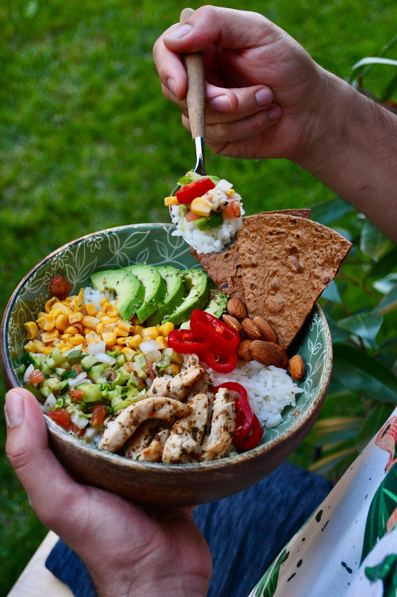
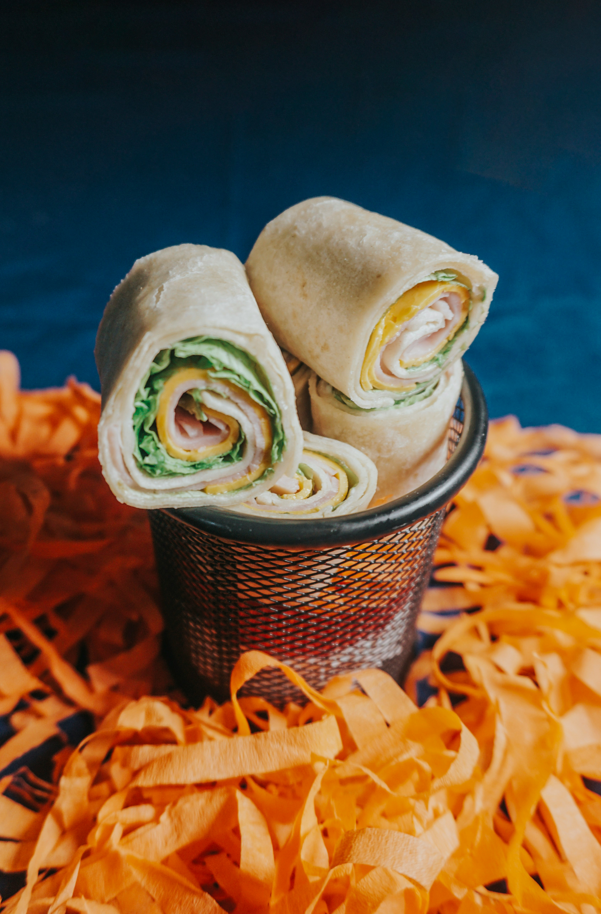
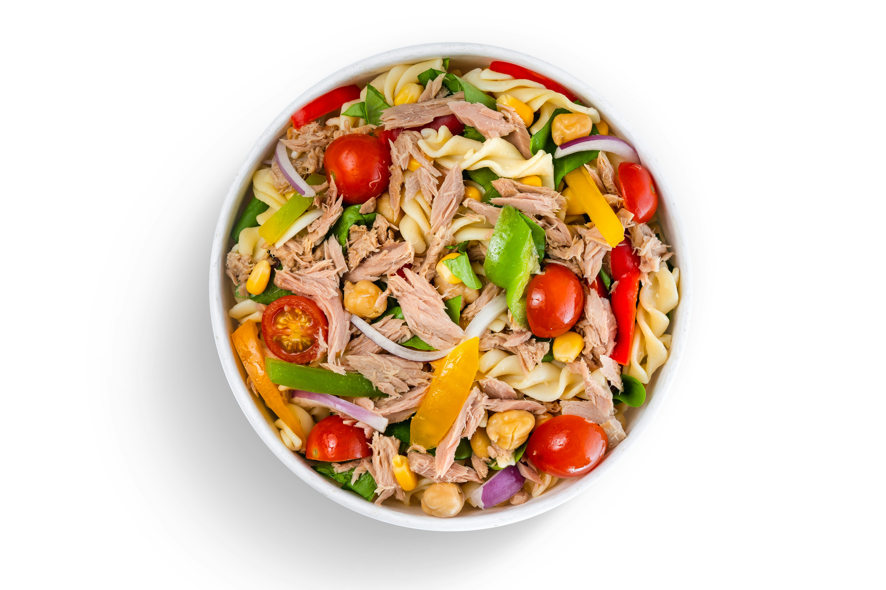

Lunch Meal Prep
Preparing lunch ahead of time can make busy days easier and save time during the week. These simple lunch ideas can be prepared ahead of time so you have a filling meal ready when you need it.
Easy Lunch Ideas
Chicken & Rice Bowl
A chicken and rice bowl is an easy lunch that can be prepared ahead of time and reheated when you are ready to eat.
Ingredients:
- 1 chicken breast
- 1 cup cooked rice
- 1/2 cup broccoli
- 1/4 cup bell peppers
- Salt and pepper to taste
Directions:
- Season and cook the chicken until fully cooked.
- Cook the rice according to the package directions.
- Steam or roast the broccoli and bell peppers.
- Slice the chicken into bite-sized pieces.
- Divide everything into a meal prep container.
- Refrigerate until ready to eat.

Turkey & Cheese Wrap
This turkey and cheese wrap is a quick lunch that is easy to prepare ahead of time and pack for a busy day.
Ingredients:
- 1 large tortilla
- 4 slices turkey
- 1 slice cheese
- 1/2 cup lettuce
- 1 tablespoon mayonnaise or mustard
Directions:
- Lay the tortilla flat.
- Add the turkey, cheese, and lettuce.
- Spread mayonnaise or mustard over the ingredients.
- Roll the tortilla tightly into a wrap.
- Refrigerate until ready to eat.

Chicken Pasta Salad
Chicken pasta salad is an easy make-ahead lunch that can be stored in the refrigerator and enjoyed cold.
Ingredients:
- 1 cup cooked pasta
- 1/2 cup cooked chicken
- 1/4 cup cherry tomatoes
- 1/4 cup cucumber
- 2 tablespoons Italian dressing
Directions:
- Cook the pasta according to the package directions.
- Drain the pasta and allow it to cool.
- Cut the chicken, tomatoes, and cucumber into bite-sized pieces.
- Combine all of the ingredients in a bowl.
- Add the Italian dressing and mix well.
- Refrigerate until ready to eat.
